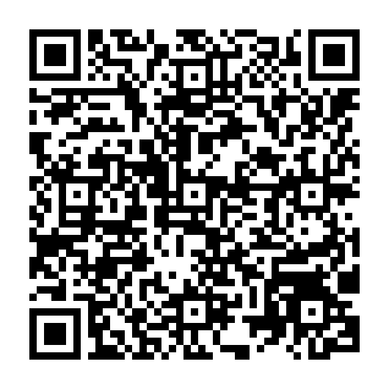

الصورة الجماعية لرؤساء الدول والحكومات.
مقدمة
يعد مؤتمر الأطراف حدثا هاما لكافة بلدان العالم، ففي هذا المؤتمر يتم تحديد الطرق والآليات التي سيتبعها المجتمع الدولي لمعالجة آثار التغيرات المناخية على كافة المستويات، البيئية والاقتصادية والاجتماعية. ويأتي هذا المؤتمر بعد تقدما ملحوظا في مستوى العمل المناخي أحرزته بلادنا عبر وزارة المياه والبيئة والهيئة العامة لحماية البيئة. فخلال الأعوام الأربعة الأخيرة استطاعت بلادنا أن تعد عددا من التقارير الهامة والتي سلطت الضوء على قضية التغير المناخي عن قرب، ومعرفة التحديات المناخية التي يواجهها اليمن، واحتياجاتها في أهم القطاعات، وهو ما نتج عنه البدء في إعداد متطلبات التمويل المناخي، وإعداد مقترحات مشاريع ستساهم في التقليل من حدة هذه الظاهرة وأيضا المضي قدما نحو التنمية النظيفة والمستدامة.
وعليه فإن مشاركة بلادنا في المؤتمر ضرورية وهامة كما ان حجم ومستوى التمثيل السياسي والفني يجب ان يكون بمستوى أهمية هذا الحدث، حيث يعد المؤتمر فرصة لعرض القضايا الوطنية على الجهات الدولية الفاعلة في العمل المناخي، بشكل يساعد في تسريع عملية التقدم في العمل المناخي على المستوى الوطني. وتأتي مشاركة بلادنا هذا العام، بوفد رفيع يترأسه نائب رئيس مجلس القيادة الرئاسي، الفريق ركن طارق محمد عبد الله صالح، وهو ما يعكس أهمية العمل المناخي بالنسبة لبلادنا. تتنوع مشاركة الوفد الرفيع المستوى ما بين قمة زعماء العالم، وفعاليات جانبية مصاحبة للقمة، وأيضا اجتماعات ثنائية هامة من الممكن عقدها على هامش جدول أعمال المؤتمر، لذا فإن أهداف مشاركة الوفد الرفيع المستوى لبلدنا من الممكن أن تتلخص في التالي:
عرض القضايا الوطنية، والمناخية والتنموية والاقتصادية الأكثر إلحاحا خلال كلمة اليمن في المؤتمر.
المشاركة في الفعاليات الجانبية الرفيعة المستوى، لعرض التحديات المناخية التي يواجهها اليمن، والتي تحتاج إلى معالجات سريعة وعاجلة.
عقد اجتماعات ثنائية مع دول العالم والمنظمات الدولية التي تهم بلادنا على المستوى السياسي والاقتصادي، والتنموي.
لكل هدف من هذه الأهداف الثلاثة، برنامج فرعي خاص به، ينبغي إدارتها من قبل الفريق المصاحب لنائب رئيس مجلس القيادة الرئاسي، وستعمل وزارة المياه والبيئة بتقديم كافة المعلومات الفنية التي سيحتاج إليها الوفد خلال مشاركته في المؤتمر.
هدف المشاركة
تمثيل الجمهورية اليمنية في قمة قادة العالم، وإبراز أولوياتها المناخية والتنموية، وافتتاح فعالية إطلاق المساهمات المحددة وطنياً، وتوجيه عمل الوفد اليمني، وتعزيز التعاون مع شركاء التمويل والتنمية.
أولاً: المشاركة في قمة قادة العالم
حضور الجلسة الافتتاحية لقمة قادة العالم.
حضور افتتاح الشق الرفيع المستوى لرؤساء الدول والحكومات.
فترة إلقاء الكلمات الوطنية والأنشطة المتوازية، مع تخصيص حضور دولة رئيس الوزراء وفق موعد كلمة اليمن واللقاءات المنسقة.
استكمال إلقاء الكلمات الوطنية وأعمال الشق الرفيع المستوى واللقاءات المنسقة على هامش القمة.
انتهاء أعمال قمة قادة العالم.
الأوقات بالتوقيت المحلي لأنطاليا، وفق الجدول الأولي لأمانة الاتفاقية، وقابلة للتحديث.[2]
كلمة الجمهورية اليمنية
إلقاء الكلمة الوطنية خلال الشق الرفيع المستوى يومَي 11–12 نوفمبر؛ ويُثبت اليوم والوقت وفق الموعد الذي تخصصه أمانة الاتفاقية لليمن. تُعد الكلمة في حدود ثلاث دقائق وفق المدة الموصى بها من الأمانة.[2]
الرسائل المقترحة: أولوية التكيف والصمود، وحماية المياه والأمن الغذائي والخدمات الأساسية، وتيسير الوصول إلى التمويل المناخي، وتعزيز الشراكات لتنفيذ المساهمات المحددة وطنياً.
ثانياً: افتتاح فعالية إطلاق المساهمات المحددة وطنياً
المساهمات المحددة وطنياً الجديدة لليمن: من الطموح المناخي إلى الاستثمار والتنفيذ
التاريخ المقترح: الجمعة 13 نوفمبر 2026، بعد يومَي القمة.
الوقت والمكان: يُحددان لاحقاً.
يفتتح دولة رئيس الوزراء الفعالية بكلمة سياسية والإعلان عن إطلاق المساهمات المحددة وطنياً لليمن (NDC)، يعقبها عرض فني مختصر يقدمه فريق وزارة المياه والبيئة بشأن الأولويات الوطنية وفرص الاستثمار والتنفيذ والشراكة.
ثالثاً: اجتماع دولة رئيس الوزراء بالوفد اليمني
اجتماع مختصر، يُقترح عقده عقب افتتاح فعالية إطلاق المساهمات المحددة وطنياً، بمشاركة وزير المياه والبيئة وأعضاء الوفد المعنيين؛ للاستماع إلى إحاطة عن المشاركة ومسار المفاوضات، واستعراض أولويات العمل المناخي، وتوجيه الوفد بشأن اللقاءات والمتابعة مع الشركاء.
رابعاً: اللقاءات الثنائية
صندوق المناخ الأخضر
(GCF)
محور اللقاء
تعزيز وصول اليمن إلى التمويل المناخي، ودعم أولويات التكيف والخدمات المناخية والإنذار المبكر، وتطوير مشاريع تنفيذ المساهمات المحددة وطنياً.
المخرجات المستهدفة
تحديد مسارات الدعم الفني والتمويلي، وخطوات إعداد المشاريع ومتابعتها.
البنك الدولي
محور اللقاء
تعزيز التعاون في أمن المياه والصمود المناخي، ومتابعة ملفات التعاون والمشاريع ذات الأولوية، وربطها بالاحتياجات الوطنية للتنفيذ.
المخرجات المستهدفة
تحديد إجراءات المتابعة والأولويات التنفيذية ونقاط الاتصال.
الاتحاد الأوروبي
محور اللقاء
توسيع التعاون في التكيف والتنمية المحلية الصامدة، والمياه والأمن الغذائي، ودعم تنفيذ الأولويات الواردة في المساهمات المحددة وطنياً.
المخرجات المستهدفة
تحديد فرص الشراكة والبرامج الملائمة ومسار المتابعة الفنية.
الجانب البريطاني
محور اللقاء
تعزيز التعاون في الخدمات المناخية والإنذار المبكر وبناء القدرات، ودعم إعداد المشاريع والقدرة المؤسسية على الوصول إلى التمويل.
المخرجات المستهدفة
تحديد مجالات الدعم الفني وآلية التنسيق مع الجهات البريطانية المعنية.
البنك العربي
محور اللقاء
مناقشة المشاريع المعلّقة، وبحث الإشكالات القائمة مع الحكومة اليمنية، وسبل معالجتها وتذليل العقبات أمام استئناف التنفيذ.
ملاحظة: تؤخذ تفاصيل الإشكاليات المتعلقة بالمشاريع المعلّقة من وزارة التخطيط والتعاون الدولي، باعتبار أن هذه الملفات تُتابَع لديها.
المخرجات المستهدفة
تحديد خطوات معالجة الإشكالات وآلية متابعة لاستئناف تنفيذ المشاريع المعلّقة.
البنك الإسلامي
محور اللقاء
مناقشة المشاريع المعلّقة، وبحث الإشكالات القائمة مع الحكومة اليمنية، وسبل معالجتها وتذليل العقبات أمام استئناف التنفيذ.
ملاحظة: تؤخذ تفاصيل الإشكاليات المتعلقة بالمشاريع المعلّقة من وزارة التخطيط والتعاون الدولي، باعتبار أن هذه الملفات تُتابَع لديها.
المخرجات المستهدفة
تحديد خطوات معالجة الإشكالات وآلية متابعة لاستئناف تنفيذ المشاريع المعلّقة.
الدول الشقيقة
(مثل السعودية وقطر وغيرها)
محور اللقاء
لقاءات مقترحة مع المملكة العربية السعودية ودولة قطر ودول شقيقة أخرى؛ لمناقشة تعزيز العلاقات والتعاون الثنائي، بما يشمل التعاون المناخي والتنموي.
المخرجات المستهدفة
تحديد مجالات التعاون ذات الاهتمام المشترك وخطوات المتابعة.
لا توجد لقاءات مطابقة. جرّب كلمة أخرى.
تُحدد مواعيد اللقاءات وأماكنها ومستويات التمثيل بالتنسيق مع الجهات المعنية، ويمكن توزيع بعضها على هامش يومَي القمة بما يتناسب مع برنامج دولة رئيس الوزراء.
التنسيق التنفيذي: وزارة المياه والبيئة، من خلال وحدة تغير المناخ، وبالتنسيق مع مكتب دولة رئيس الوزراء والجهات الدبلوماسية المعنية؛ لتثبيت البرنامج التفصيلي، وإعداد الكلمات والإحاطات، وتنظيم المتابعة مع الشركاء.
للاطلاع على تفاصيل ترتيبات المشاركة
يمكن لسكرتارية رئاسة الوزراء مراجعة تعميم أمانة الاتفاقية المؤرخ 7 أكتوبر 2026 بشأن ترتيبات قمة أنطاليا والشق الرفيع المستوى، للاطلاع على مزيد من التفاصيل عن المشاركة والبروتوكول، عبر رمز الاستجابة السريعة أدناه.[2]

فتح التعميم الرسمي[1] أمانة اتفاقية الأمم المتحدة الإطارية بشأن تغير المناخ — معلومات المشاركين في COP31.
[2] أمانة الاتفاقية — ترتيبات قمة أنطاليا والشق الرفيع المستوى، تعميم 7 أكتوبر 2026.